Терникасайт природного квартала для застройщика
Новый квартал на 771 квартиру в Пензе: 5 строений на 2,99 га вокруг двора-парка без машин. Сайт стал главным инструментом отдела продаж на старте: сюда идёт реклама, здесь покупатель выбирает квартиру и оставляет заявку.
Смотреть сайт вживую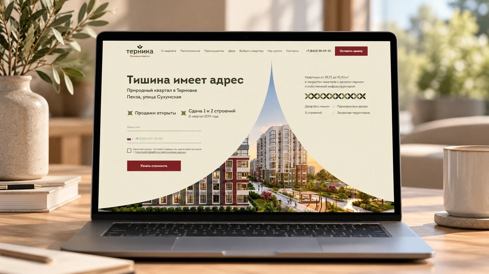
Продать квартал, которого ещё нет
Спроектировать сайт, который продаёт квартал, а не просто показывает рендеры, и приводит в отдел продаж тёплые заявки с понятным запросом.
Аудитория — семьи 28–45 лет, которые выбирают первое или «большое» жильё и сравнивают несколько ЖК одновременно. В новостройке человек покупает то, чего ещё нет, поэтому главное, что должен дать сайт, — доверие. И закрыть четыре возражения до звонка менеджеру:
Квартал в Терновке, не в центре. Непонятно, что рядом с домом.
На сайтах ЖК планировки часто не совпадают с тем, что реально свободно.
Неясно, сколько стоит и какие есть способы оплаты.
Главный страх покупателя новостройки — доверие к застройщику.
Сначала логика, потом визуал
Собрал страницу как путь покупателя. Каждый блок должен был отвечать на конкретный вопрос — только после этого он получал дизайн.
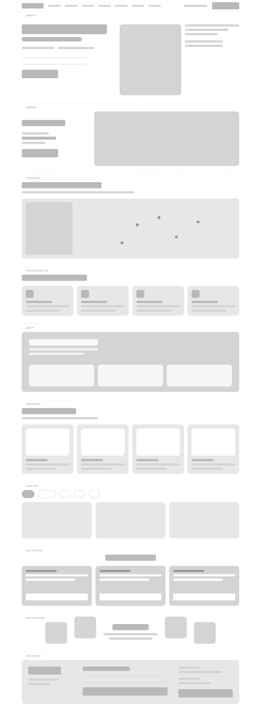
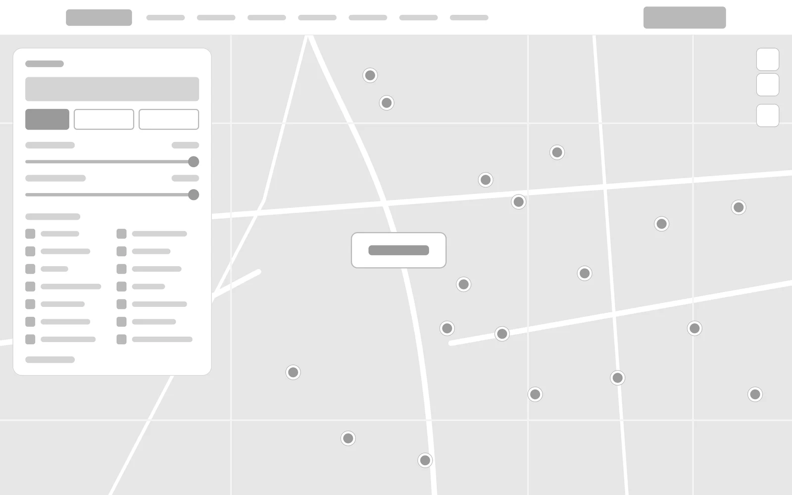
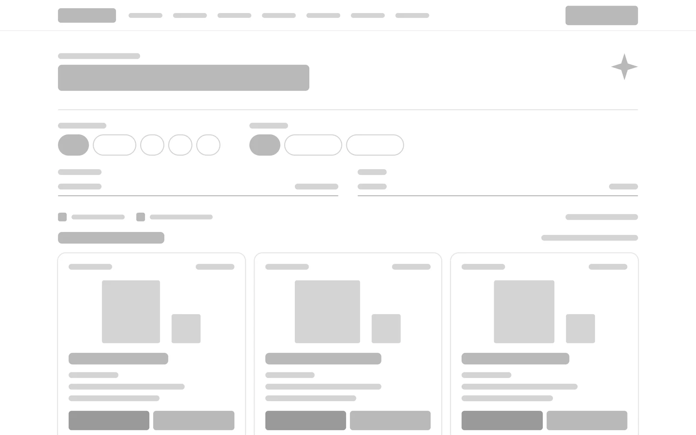
Прототип без цвета и картинок показывает главное: в каком порядке человек получает ответы на свои вопросы. Карта и каталог получили больше всего места — именно они закрывают возражения «далеко» и «не то в продаже».
К чему пришёл после анализа
Застройщики пишут на сайтах одно и то же. Здесь каждое обещание заменено тем, что покупатель может проверить сам.
Карта района вместо «развитой инфраструктуры»
Фразе «рядом школы и магазины» никто не верит. На карте больше 300 реальных объектов: школы, сады, медицина, спорт, кафе, ТЦ. Фильтр «15 минут пешком / на машине» сам отвечает на возражение «далеко».
Каталог, связанный с базой застройщика
Планировки подтягиваются из CRM отдела продаж и обновляются каждые 15 минут. Видны только свободные квартиры. Заявка с карточки приходит менеджеру с номером квартиры, площадью и этажом.
Разные заявки под разные намерения
Вместо одной кнопки «Оставить заявку» — «Получить планировки», «Получить расчёт», «Получить буклет», «Узнать цену». Отдел продаж сразу понимает, на каком этапе человек.
Деньги — понятным языком, до звонка
100% оплата, рассрочка 0% до ввода, платёж от 50 000 ₽/мес, семейная ипотека от 6%, бронь цены на 2 месяца. Человек находит свой вариант и звонит с вопросом «как оформить».
Мобильная версия как основная
71% трафика — с телефона. Выноски на архитектуре не пересекаются даже на 320 px, карточки листаются по одной, в каталоге — облегчённые превью планировок.
Подача через доверие
Сроки сдачи — на первом экране. Стандарт отделки — списком. Юрлицо, ИНН и проектная декларация — в открытом доступе. Всё, что покупатель захочет проверить, он находит сам.
Вовлекающие анимации, которые удерживают внимание
Сайт ЖК длинный, и главный риск — что человек бросит его на середине. Поэтому страница рассказывает историю квартала через скролл: звезда из фирменного паттерна (мотив тёрна, давшего название кварталу) раскрывается и открывает следующую сцену, цифры появляются по одной, карточки двора выезжают поверх рендеров. Анимации управляются скроллом, а не временем: человек сам задаёт темп и ничего не ждёт.
Как каждый блок ведёт к покупке
Под каждым экраном — зачем этот блок на сайте. Метки показывают, на что он работает:
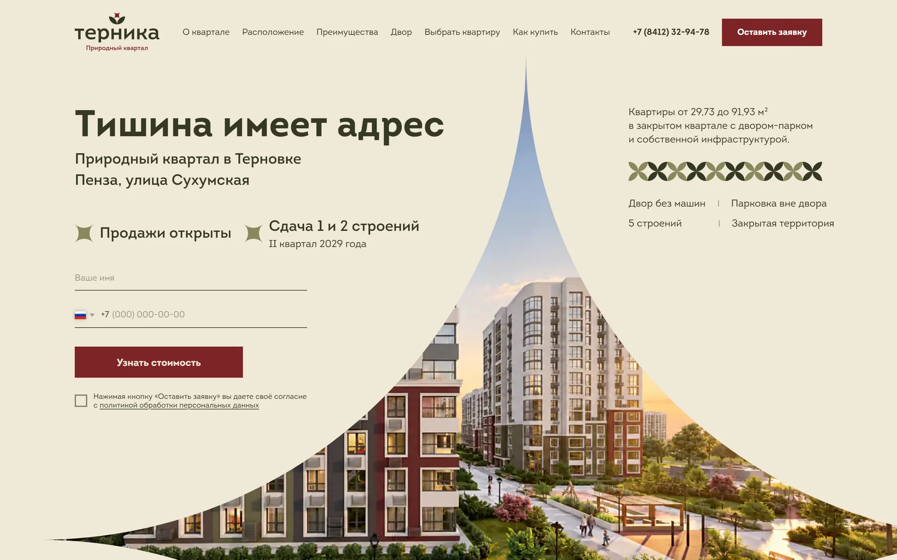
Первый экран и история
Продаём не квадратные метры, а образ жизни: тишину и природу рядом с городом. Сразу под эмоцией — конкретика: статус продаж и срок сдачи. Застройщик, который называет сроки на первом экране, вызывает больше доверия, чем тот, кто их прячет.Анимация: история названия квартала разворачивается сменой сцен на скролле
Терника в цифрах
2,99 га, 5 строений, 771 квартира. Масштаб проекта — аргумент надёжности. Цифры вместо прилагательных: покупатель сам делает вывод.Анимация: цифры появляются по одной, чтобы каждая запомнилась
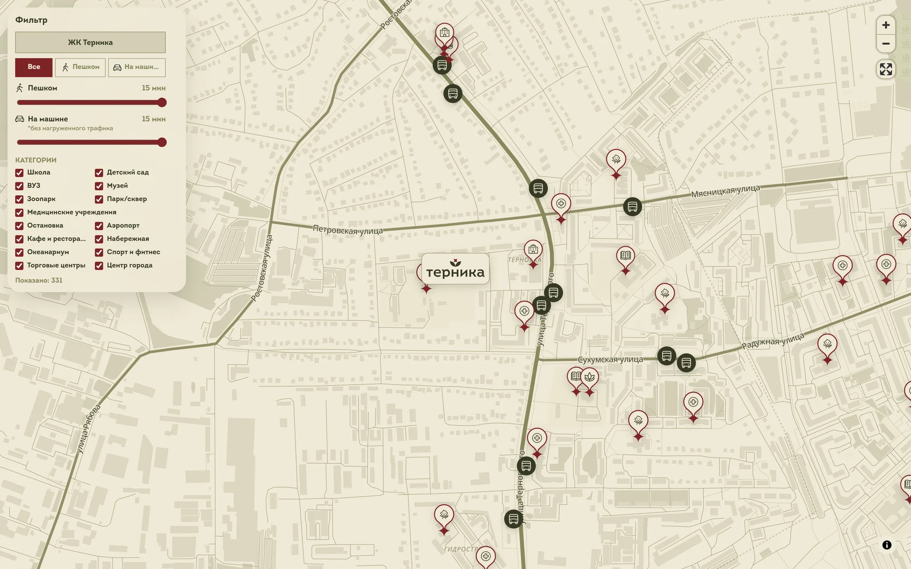
Интерактивная карта района
Не обещаем «развитую инфраструктуру», а показываем каждую школу и поликлинику. Фильтр по времени в пути пешком и на машине. Покупатель проверяет сам — и верит, потому что ничего не скрыто.
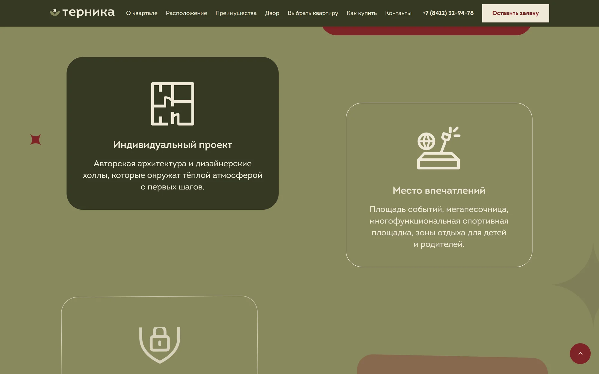
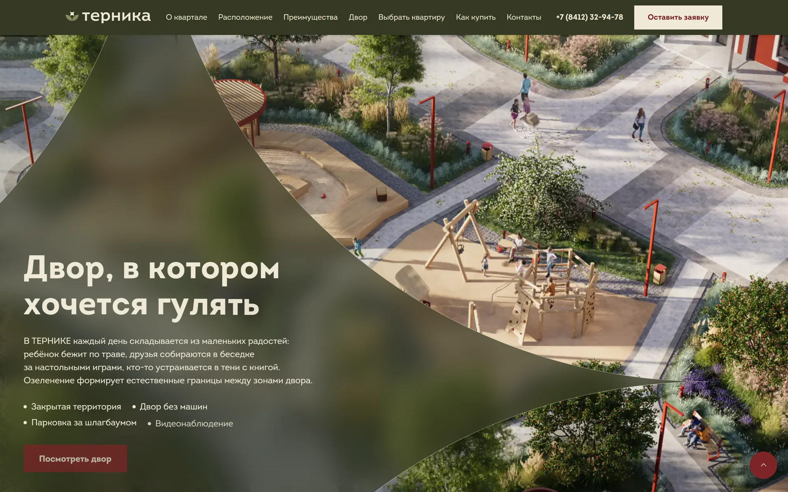
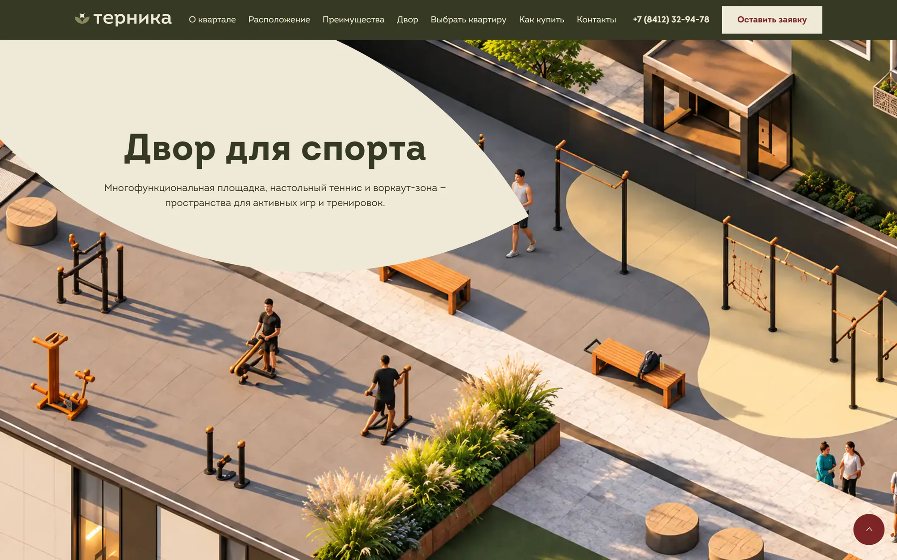
Двор без машин и закрытая территория
Бьём в главный страх семьи с детьми — безопасность во дворе. «Можно отпустить ребёнка гулять одного» сильнее любого рендера.Анимация: карточки площадок выезжают поверх рендера — двор «оживает» на скролле
Архитектура и холлы
Выноски на фасаде объясняют, за что покупатель платит: авторская архитектура, дизайнерские входные группы. Так цена воспринимается как оправданная, а не завышенная.Анимация: фасад раскрывается внутри звезды, пространства холла появляются по очереди — как прогулка от входа до лифта
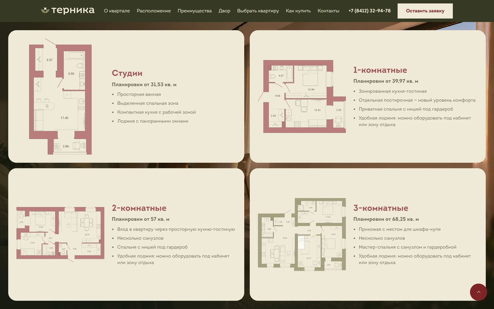
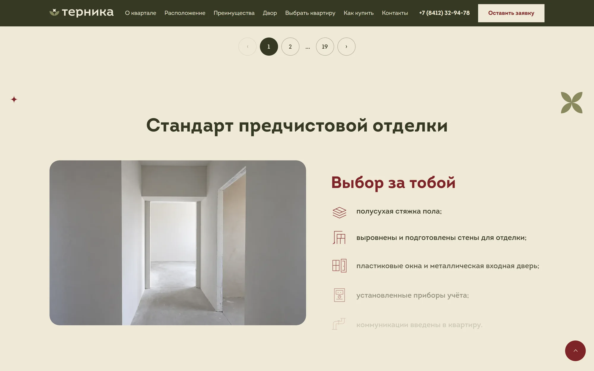
Планировки и стандарт отделки
Список того, что будет в квартире при получении ключей: стяжка, подготовленные стены, окна, дверь, счётчики. Снимает страх скрытых расходов — покупатель заранее знает, что получит.Анимация: звезда «открывает дверь» в квартиру и подводит к выбору планировки
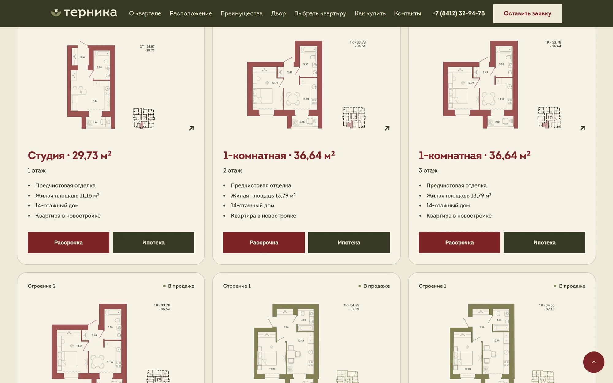
Каталог свободных квартир
Только реально доступные квартиры с актуальными данными — 171 квартира на старте. Покупатель видит честную картину и выбирает конкретную квартиру, а заявка уходит менеджеру уже с её номером.
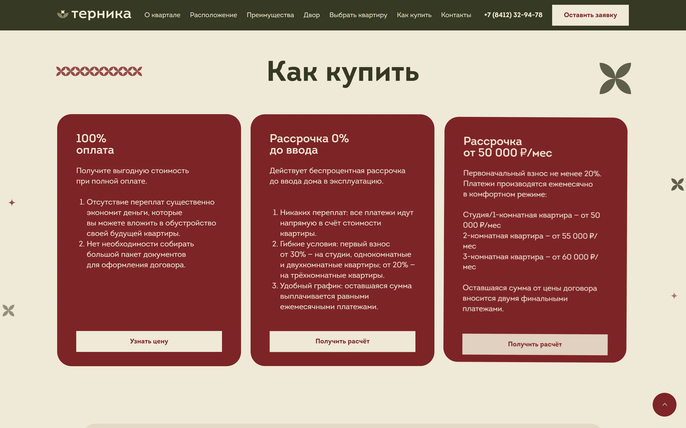
Как купить
Самый важный блок для решения. Рассрочка 0%, ипотека от 6%, платёж от 50 000 ₽/мес — покупатель сразу видит, что квартира ему по карману. Бронь цены на 2 месяца снимает барьер «сначала надо продать своё жильё».
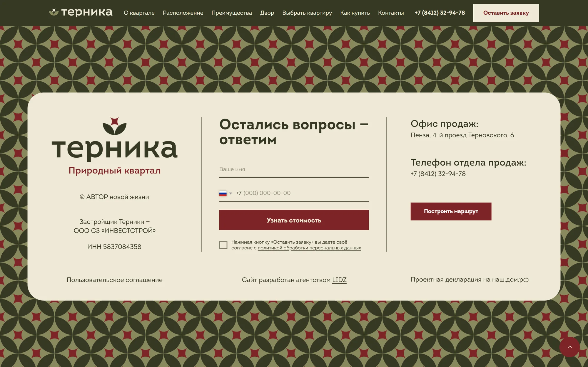
Застройщик и офис продаж
В новостройке покупают не квартиру, а обещание застройщика. Поэтому показываем ещё 5 его проектов, юрлицо, ИНН и проектную декларацию, а в контактах — реальный офис с кнопкой «Построить маршрут».Анимация: проекты застройщика собираются вокруг логотипа — масштаб компании виден без слов
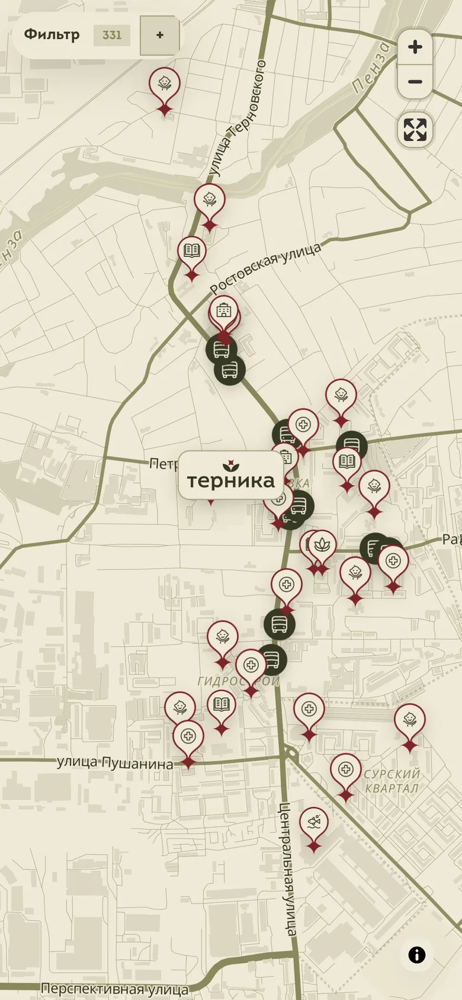
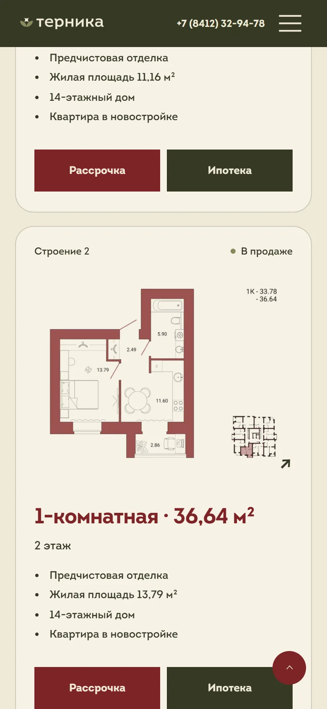
Мобильная версия
71% посетителей видят сайт с телефона, поэтому мобильная версия — основная, а не урезанная. Все анимации, карта и каталог работают так же, как на десктопе.
Анимации здесь — не украшение
Они управляются скроллом, рассказывают историю квартала по шагам и удерживают внимание на длинной странице, чтобы человек дошёл до планировок и условий покупки.
85 заявок за первый месяц
Сайт сам закрывает возражения «далеко», «непонятно, что в продаже», «не потяну» и «а вдруг не достроят» — поэтому застройщик может запускать рекламу на холодную аудиторию.
Рендеры, планировки в PDF и задача открыть продажи нового квартала не в центре города.
Сайт, который ведёт от эмоции к конкретной квартире и на каждом шаге даёт повод доверять.
Отдел продаж получает заявки с выбранной квартирой и понятным запросом, а не просто телефоны.
Статистика сайта за 28.09–28.10.2026. Продажи открылись 15 октября.
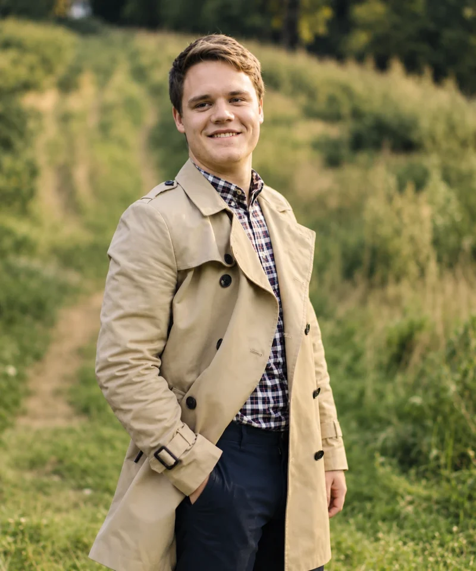
Как маркетологу застройщика, мне был нужен не просто красивый сайт для квартала «Терника», а инструмент, который приводит покупателей.
Максим продумал структуру, грамотно показал преимущества квартала, сделал удобный выбор квартир и уделил особое внимание мобильной версии.
Отдельно отмечу результат: 85 заявок за первый месяц. Для нас это показатель того, что сайт не только хорошо выглядит, но и решает реальные маркетинговые задачи.
Всегда был на связи, быстро вносил правки и предлагал решения с учётом наших пожеланий. Результатом полностью довольны и смело рекомендуем к сотрудничеству.
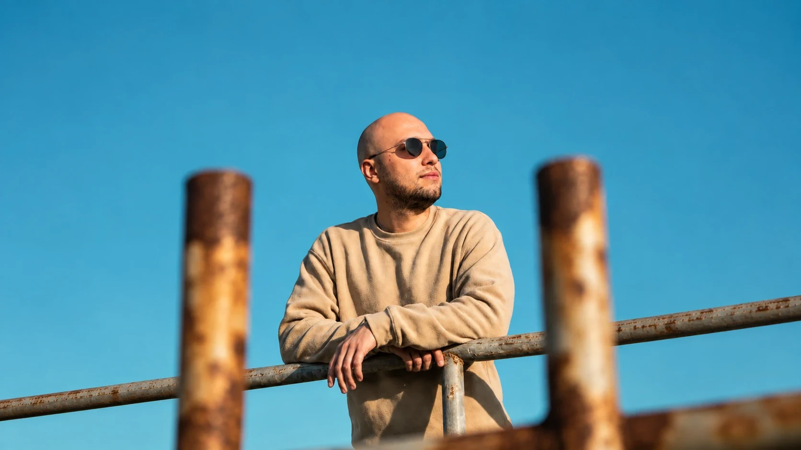
Напишите слово «Квартал»
И я бесплатно разберу сайт вашего ЖК: покажу 3 места, где покупатели уходят, так и не оставив заявку.
Максим КоцарьUI/UX-дизайнер сайтов для застройщиков